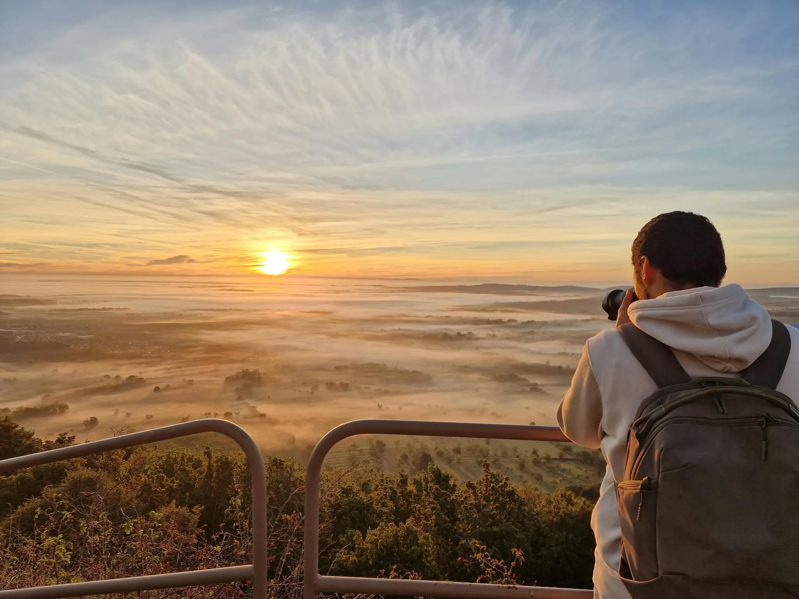
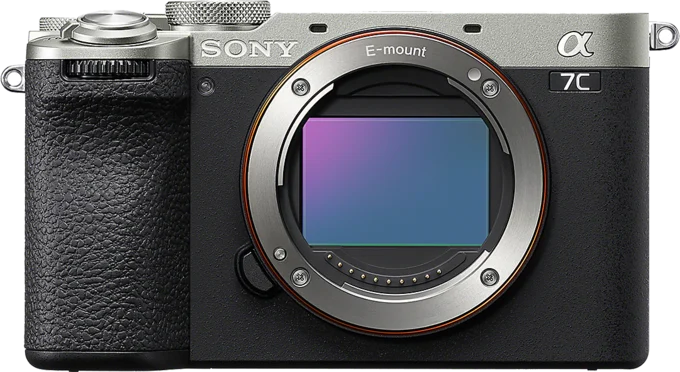
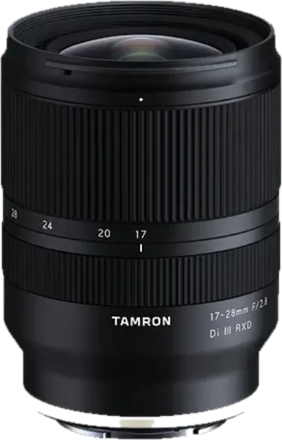
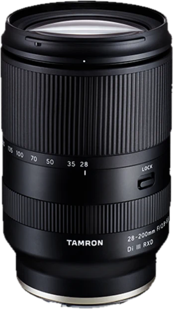
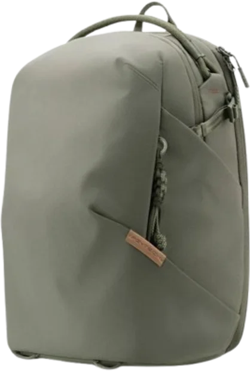
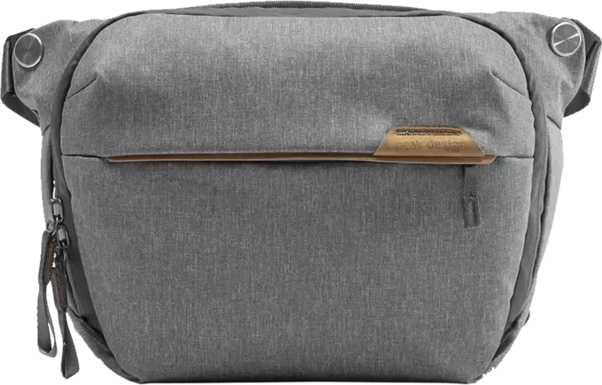

Marcher, attendre, regarder
[Présentez-vous en quelques phrases : qui vous êtes, où vous vivez, depuis quand vous photographiez.]
[Votre démarche : ce qui vous attire en montagne, pourquoi les mers de nuages, votre rapport à la lumière du matin.]
[Éventuellement : votre matériel, vos terrains de jeu favoris, vos projets à venir.]

Une photo vous plaît, un tirage vous tente ?
Une question ? N’hésitez pas.
-

Sony A7C II
Plein format 33 Mpx
Un plein format qui tient dans un sac de randonnée sans peser sur les épaules. Ses 33 Mpx laissent de la marge pour recadrer, et sa dynamique encaisse les contre-jours des levers de soleil.
-

Tamron 17‑28 mm
f/2,8 constant
Mon essentiel pour la Voie lactée, dont il capture une bonne partie. C’est aussi lui que je sors quand le 28 mm ne suffit plus : une montagne trop haute, une vallée trop large, ou un sentier forestier dont je veux garder toute l’ambiance.
-

Tamron 28‑200 mm
f/2,8 – 5,6
Mon couteau suisse. Assez large pour le paysage, assez long pour aller chercher un détail au loin : il couvre la plupart de mes sorties sans que j’aie à changer d’objectif.
-

Pgytech OneGo Lite
Sac photo 16 L
Le meilleur appareil photo, c’est celui qu’on a sur soi. Ce sac passe partout et me permet de toujours garder mon boîtier à portée de main, avec de quoi boire et manger pour la randonnée.
-

Peak Design Everyday Sling
Sacoche 6 L
Pour les sorties plus courtes, quand je ne veux pas m’encombrer. Léger, il me permet de sortir mon boîtier ou de changer d’objectif en quelques secondes.